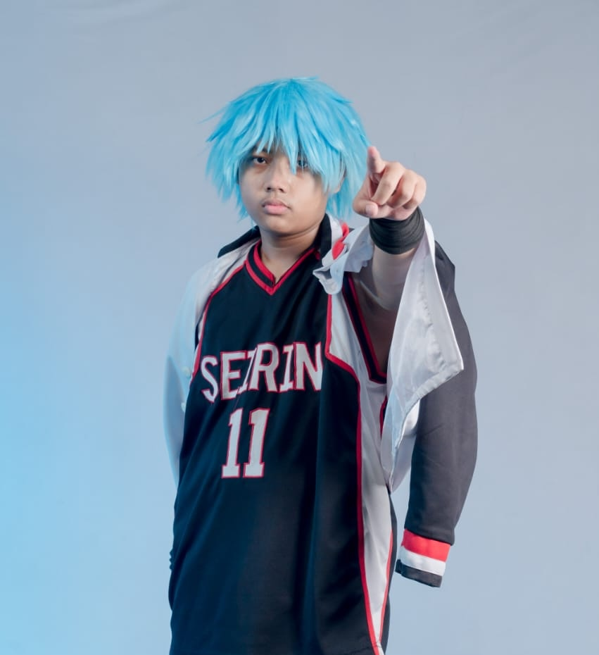
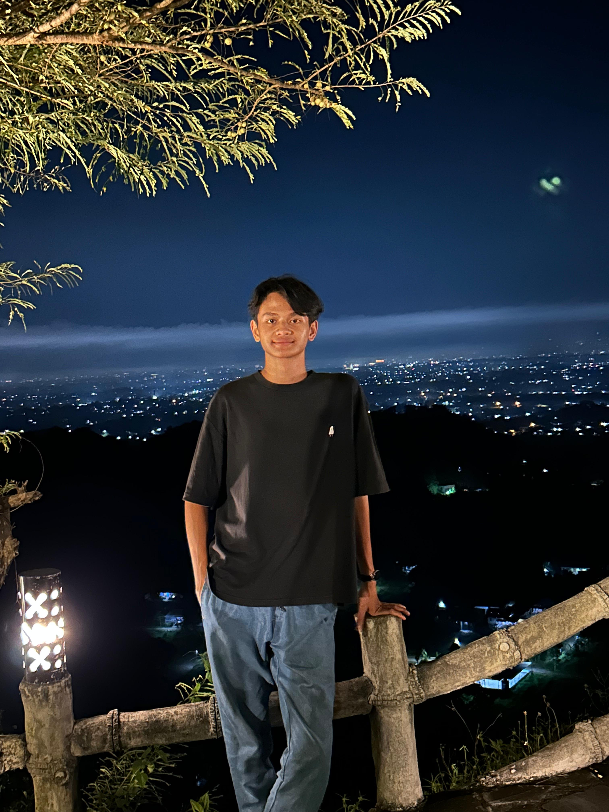
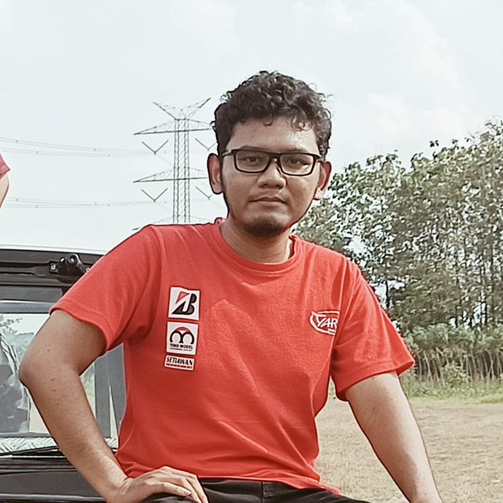
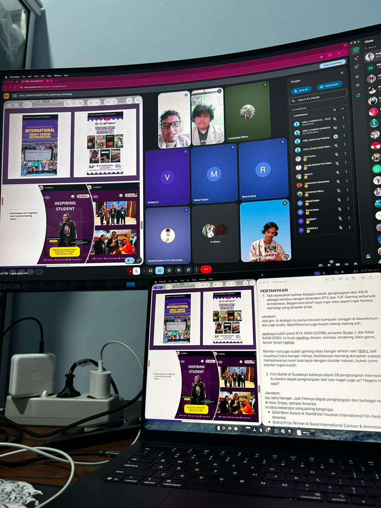
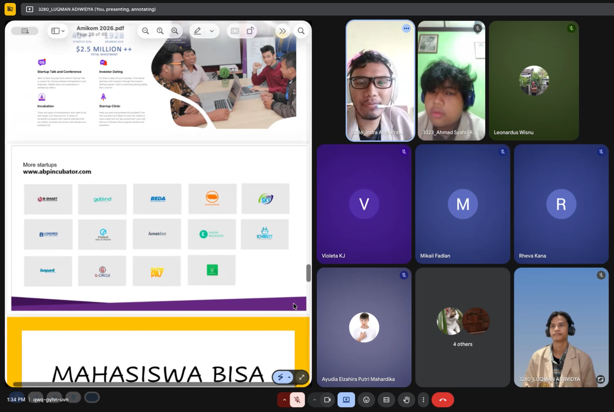
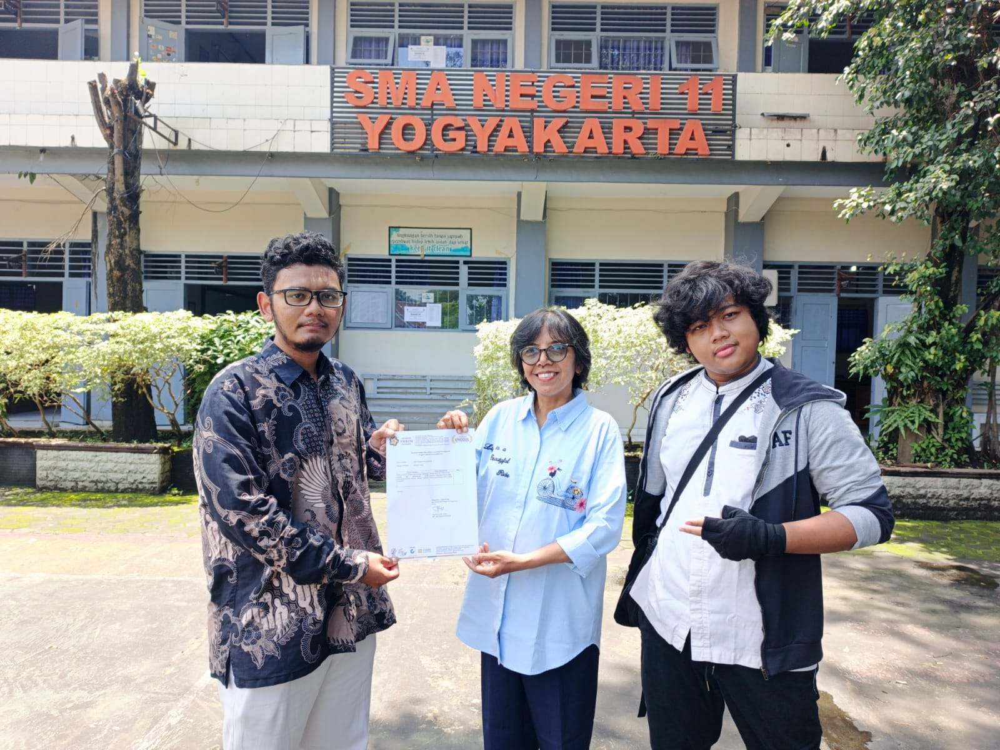

Laporan Kegiatan — Mata Kuliah Komunikasi dan Negosiasi
Fakultas Ilmu Komputer, Universitas AMIKOM Yogyakarta — 2026



Siswa SMA/SMK masih banyak yang belum memahami Program Studi Sistem Informasi — termasuk kompetensi, prospek karier, dan pengalaman nyata selama kuliah.
Minimnya literasi tentang dunia Teknologi Informasi di jenjang SMA/SMK
Risiko kesalahan pilihan jurusan & menurunnya motivasi belajar
Era digital membuka peluang luas di industri, pemerintahan, dan wirausaha digital
Mahasiswa aktif sebagai narasumber = gambaran realistis & relevan bagi calon mahasiswa
Memberikan pemahaman menyeluruh tentang Prodi SI AMIKOM: kurikulum, kompetensi, dan prospek karier
Memperkenalkan keunggulan, fasilitas, prestasi, dan ekosistem inovatif AMIKOM
Berbagi pengalaman perkuliahan nyata, termasuk keterlibatan di komunitas riset TANAMI
Mendorong siswa untuk tertarik pada bidang TI dan mempertimbangkan AMIKOM sebagai pilihan PT
Melatih kemampuan komunikasi, presentasi, dan public speaking mahasiswa pelaksana
Fakultas, Program Studi, dan International Program AMIKOM
Fasilitas kampus dan Amikom Creative Economy Park
MSV Studio, Radio MQFM, RBTV, Time Excelindo, PT. GIT Solution, ABP
Program beasiswa dan peluang program internasional
Interaktif langsung dengan siswa Kelas 10 E5
Riset & Inovasi Mahasiswa AMIKOM
Pengembangan alat IoT untuk pertanian urban dan rural
Aplikasi monitoring tanaman berbasis teknologi
🥈 Juara 2 GEMASI 2026 — Divisi Aplikasi & SI
Mendapatkan tawaran dari ABP Incubator (Amikom Business Park)
Koordinasi tim, riset konten, pembuatan slide, koordinasi jadwal
Presentasi interaktif, sesi tanya jawab langsung dengan siswa
Evaluasi bersama, identifikasi kekurangan, penyusunan laporan


⚠️ Penyesuaian jadwal dengan agenda sekolah yang padat
💡 Komunikasi aktif via WhatsApp dengan Ibu Sugiharti dan fleksibilitas jadwal
✅ Kegiatan terlaksana sesuai rencana
⚠️ Kendala jaringan internet yang tidak stabil
💡 Mempersiapkan koneksi cadangan (hotspot pribadi)
✅ Presentasi berjalan lancar
⚠️ Tingkat pemahaman awal siswa kelas X yang beragam
💡 Materi disederhanakan dengan bahasa mudah, contoh konkret, dan visualisasi
✅ Siswa antusias dan paham materi
⚠️ Pengelolaan waktu presentasi yang kurang optimal
💡 Briefing sebelum acara dan penetapan pembagian waktu terstruktur
✅ Semua materi tersampaikan
Ibu Sugiharti, S.Pd., M.M. — Guru Pendamping Kelas 10 E5, SMAN 11 Yogyakarta
✅ Penyampaian materi sudah baik dan menyeluruh
✅ Konten dinilai kreatif, inovatif, dan bernilai inspiratif
✅ Materi relevan dan menarik bagi siswa kelas X
✅ Struktur presentasi tersusun baik
💡 Perlu terus meningkatkan cara penyampaian agar lebih natural, tidak terlalu bergantung pada teks slide, agar interaksi dengan audiens lebih hidup.
Masukan ini menjadi refleksi penting: kemampuan public speaking dan penguasaan materi organik perlu terus diasah untuk dampak yang lebih besar ke depannya.
Kegiatan sosialisasi berjalan baik dan disambut antusias oleh siswa Kelas 10 E5 SMAN 11 Yogyakarta
Mahasiswa memperoleh gambaran nyata dunia perkuliahan Sistem Informasi AMIKOM
Berkontribusi pada literasi digital dan membantu siswa mengambil keputusan pendidikan lebih matang
Tim pelaksana berhasil mengasah kemampuan komunikasi, public speaking, dan kolaborasi tim

Ahmad Syahri R. • Luqman Adiwidya • Indra Arya P. — Universitas AMIKOM Yogyakarta 2026